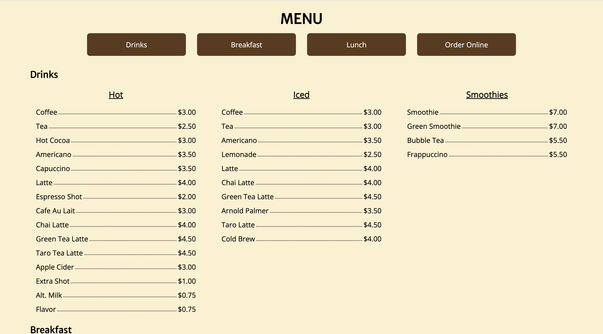
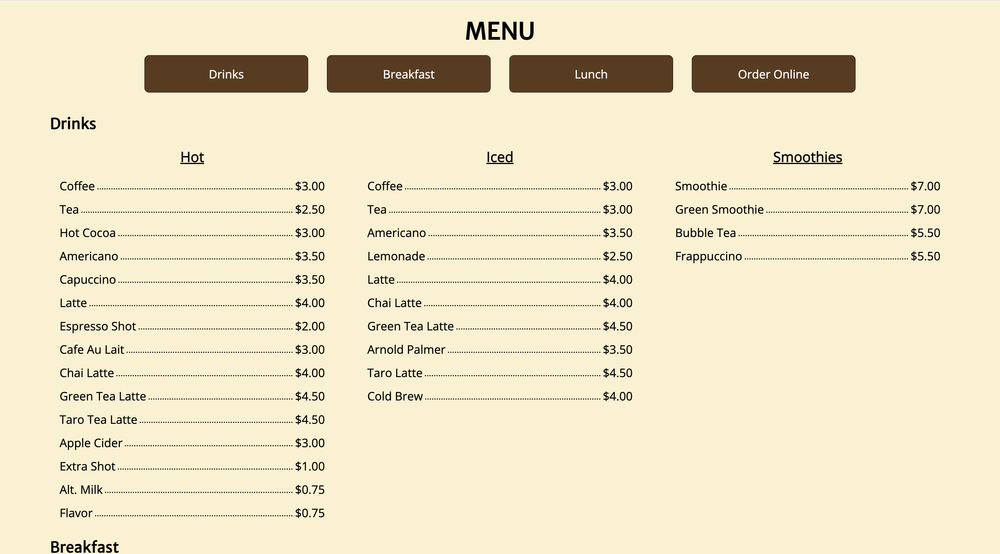

In my hometown, there is a cute, cozy cafe called Norby's that my family and I go to almost every week. However, when I was looking at their website, I found that it did not accurately represent the homey atmosphere that you experience going in-person. Thus, I decided to redesign their website. Throughout this project, I identified usability and accessibility problems on the current website, sketched and made low fidelity wireframes, and finally coded the final redesign in HTML/CSS. When coding my redesigned version, I focused on making the website resizable so that it could be used on various devices.
Role: my role
Skills: my skills
Tools: my tools
Identifying Problems in the Current Webpage
Before thinking about how I wanted my redesign to look, I took some time to identify the issues with the current webpage that I wanted to avoid in my redesigned version. Below are some pictures of the current version of Norby's website.
When I first opened the page, it was clear that the website hadn't reached its full potential, aesthetically and functionally. Focusing on the functionality and usability, I summed up my thoughts on what worked and what didn't in this table below.
| Good Usability | Bad Usability |
|---|---|
|
|
Additionally, I wanted to identify any accessibility problems with the website. To do so, I put the website into WebAIM WAVE. The only error that WebAIM WAVE gave me was a “missing form label” and some alerts like “redundant link” and“skipped heading level”. Since Norby's website is straightforward (just text and images), it is already pretty accessible according the WebAIM WAVE report. Thus, I decided I wanted to keep the simplicity of the original website while making it responsive, which it was not. For instance, when I opened the website on my phone, it had the exact same display as on the computer, which meant the text was very small and hard to read.
Sketching and Wireframing
Once I had an idea of what elements I wanted to include, which was essentially what was already on the website, it was time to make the first sketches. In the first round of sketching I did, I did nine speed sketches, each in one minute (left). Then, from these nine sketches, I pulled what I liked best to make one final sketch (right and center).
It was clear from the original Norby's website that the cafe wanted photos of the establishment to be front and center to entice customers. This is why I chose to keep the photos at the forefront. Then, I wanted to keep the overall design pretty simple while making the functionalities, like ordering online, standout more. Their menu page seemed to lack a clear structure in some places, so another goal was to make it more readable. After this sketch, I wanted to sketch how it would look on different devices. Below is what I imagined.
Tablet
Desktop
Phone
To get a better sense of the what the website would look like once it was complete, I created a high-fidelity wireframe in Figma. Additionally, I created a style guide to help me stay consistent. I chose warm tones because they reminded me of the cabin-like interior of the cafe as well as coffee.
Style Guide
Desktop
Phone
The Final Product
Finally, now that I was happy with how I wanted the website to look, it was time to code it! Since this project was soley front-end, I only used HTML/CSS. Still, I ran into some challenges during implementation. The first was that I had not used HMTL/CSS in about a year, so before I started, I had to look over some previous code to figure out the syntax. Another issue was that I wanted the dotted lines connecting menu items to their price to be resizable based on screen size. Here's an example:
This was difficult because my first idea was the use underscores. However, those did not resize well, so I had to do some research to find that making a horizontal dotted line was most efficient.
Another challenge I ran into was that I wanted the menu buttons at the top to collapse into a hamburger style menu when on the phone. However, due to the time restraints of the project, I did not have time to implement it.
Overall, the implementation went very smoothly, and I'm happy with how the site turned out! You can find my redesigned website here. Here are some screenshots below.
 



Conclusion
As someone who loves going to this cafe, it was really satisfying to be able to reimagine their website and make it as welcoming as the cafe itself. From this project, I learned about how much effort goes into making pages responsive for different devices, sometimes having to make whole new CSS sheets. However, it was very rewarding once I was finally able to get the resizing the way I wanted and can show people my redesign right from my phone. In the future, if I have more time to work on this project, I would love to make it more functional (i.e. not just front-end). I hope you like it!